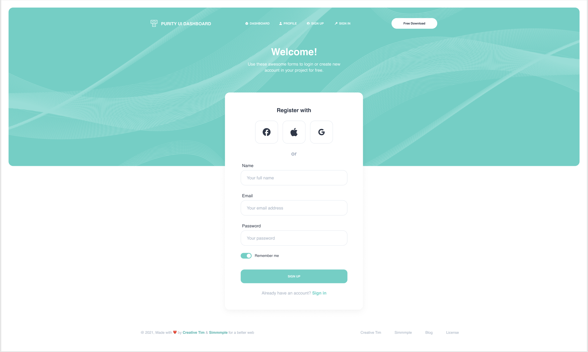

บทเรียน 08 · จาก Screenshot สู่ Prompt (Screenshot to Prompt)
ใช้ Figma ประกอบ Prompt
Working from Figma
Screenshot บอกไม่หมด
Screenshot ช่วยให้เห็นโครงสร้างและภาพรวมของดีไซน์ แต่รายละเอียดอย่างสี hex ระยะห่างเป็น px รัศมีมุม และชื่อฟอนต์ ดูจากภาพได้เพียงคร่าว ๆ ถ้ามีไฟล์ Figma ให้เปิดควบคู่กันเพื่ออ่านค่าเหล่านี้
เปิดไฟล์ Purity UI
เปิดลิงก์ไฟล์ต้นแบบ: Purity UI Dashboard บน Figma Community ไฟล์ community เปิดดูได้ฟรี กด Open in Figma เพื่อ duplicate ไปยัง drafts ของเราเอง แล้วลองเลือก layer และดูค่าต่าง ๆ ได้โดยไม่กระทบไฟล์ต้นฉบับ
- เลือก layer — คลิกที่ของที่สนใจ (ดับเบิลคลิกเพื่อเจาะลึกเข้าไปในกลุ่ม) แล้วดูแผง Design ด้านขวา: Fill คือสี, Corner radius คือมุมโค้ง, ขนาดและตำแหน่งอยู่ด้านบน
- ข้อความ — เลือก text layer จะเห็นฟอนต์ ขนาด น้ำหนัก และ line height
- ระยะห่าง — เลือกของชิ้นหนึ่ง กด Option (Alt) ค้าง แล้วชี้อีกชิ้น Figma จะโชว์ระยะห่างเป็น px ให้ — ท่านี้ใช้วัด gap ระหว่างการ์ด
- Dev Mode — ถ้ามีให้เปิด (ปุ่มสลับ </> มุมขวาบน) จะเห็นค่าแบบ CSS ตรง ๆ แต่ไม่มีก็ไม่เป็นไร แผง Design บอกครบแล้ว
อะไรควรลอกจาก Figma ลง prompt / token
ไม่จำเป็นต้องคัดลอกทุกตัวเลข ให้เลือกค่าที่ใช้ซ้ำและเป็นส่วนหนึ่งของระบบดีไซน์
- สีแบรนด์ — คลิกกล่องไอคอนเขียวมิ้นต์แล้วดูค่า Fill ค่านี้เป็นที่มาของ token ในบทเรียน 05 เช่น
#4fd1c5 - ฟอนต์ — Purity ใช้ Helvetica ซึ่งเป็นฟอนต์ระบบของ Mac — เราใช้
font-sansค่า default ของ Tailwind แทนได้เลย (ระบุใน prompt ว่า "ใช้ font-sans") ไม่ต้องโหลดฟอนต์เพิ่ม - รัศมีมุมการ์ด — วัดได้ราว 16px →
rounded-2xl— ล็อกเป็นมาตรฐานใน prompt ได้ว่า "การ์ดทุกใบ rounded-2xl" - ช่องไฟระหว่างการ์ด — ราว 24px →
gap-6
Export assets
ของบางอย่างไม่ควรสร้างด้วยโค้ด แต่ควร export จาก Figma มาใช้ตรง ๆ
- รูปภาพ — เช่นรูปทีมในการ์ด "Work with the Rockets" หรือพื้นหลังลายคลื่นของ hero: เลือก layer → ส่วน Export ล่างสุดของแผง Design → เลือก PNG (2x สำหรับจอ retina) → วางไฟล์ใน
public/images/ของโปรเจกต์ - ไอคอน — export เป็น SVG แล้วเปิดไฟล์ copy โค้ด
<svg>มาวางเป็น inline SVG ใน component (ตาม rules ของเรา) จะได้คุมสีด้วยcurrentColorได้ - รูป avatar ในตาราง — ใน workshop เราใช้ placeholder จาก
https://i.pravatar.cc/150?img=3(เปลี่ยนเลขท้ายได้หลายหน้า) แทนรูปจริงได้ สะดวกกว่า export ทีละรูป
เมื่อไหร่ screenshot พอ / เมื่อไหร่ต้องเปิด Figma
- Screenshot พอ — สำหรับโครงสร้าง, layout, ลำดับของ, เนื้อหาข้อความ — คือส่วน "โครงสร้าง" ของ prompt ทั้งหมด
- เปิด Figma — ตอนตั้ง design tokens (ครั้งเดียวต่อโปรเจกต์), ตอนต้องการค่าที่เป๊ะ (ดีไซเนอร์เพ่งเล็งระยะตรงไหนเป็นพิเศษ), และตอน export assets
ไม่ต้อง inspect ทุก pixel ให้เน้นค่าที่เป็นระบบ เช่น token, spacing scale และรัศมีมุม ส่วนรายละเอียดปลีกย่อยใช้ screenshot เป็นข้อมูลประกอบได้ หลัง Agent สร้าง UI แล้วค่อยเทียบกับต้นฉบับและแก้เฉพาะจุดที่ยังไม่ตรง
แบบฝึก — prompt หน้า Sign Up

เขียน prompt สี่ส่วนสำหรับหน้า Sign Up ด้วยตัวเอง: decompose ภาพ (บทเรียน 06) → เขียนสี่ส่วน (บทเรียน 07) → เปิด Figma อ่านค่าประกอบ เช่นสี hero กับรัศมีการ์ด (บทนี้) จุดที่ต้องคิดเป็นพิเศษ: หน้านี้ไม่มี sidebar — ต้องบอก Agent เรื่องนี้ยังไงในส่วนไหนของ prompt? เก็บ prompt ที่เขียนไว้ — บทเรียน 11 มีเฉลยให้เทียบ
ตอนนี้เรามีขั้นตอนสำหรับถอดดีไซน์เป็น prompt ครบแล้ว บทถัดไปจะนำ prompt แรกไปใช้กับ Cursor Agent เพื่อสร้าง app shell